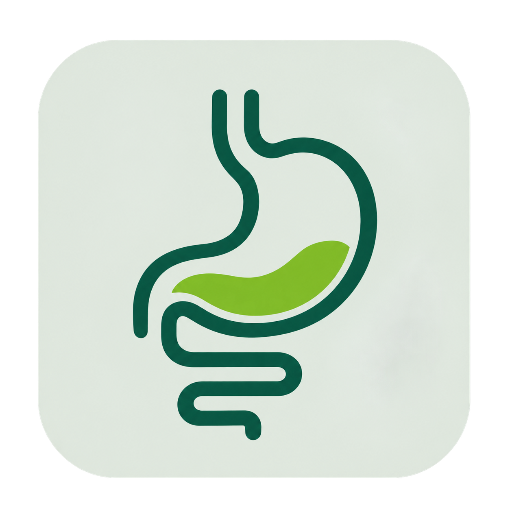
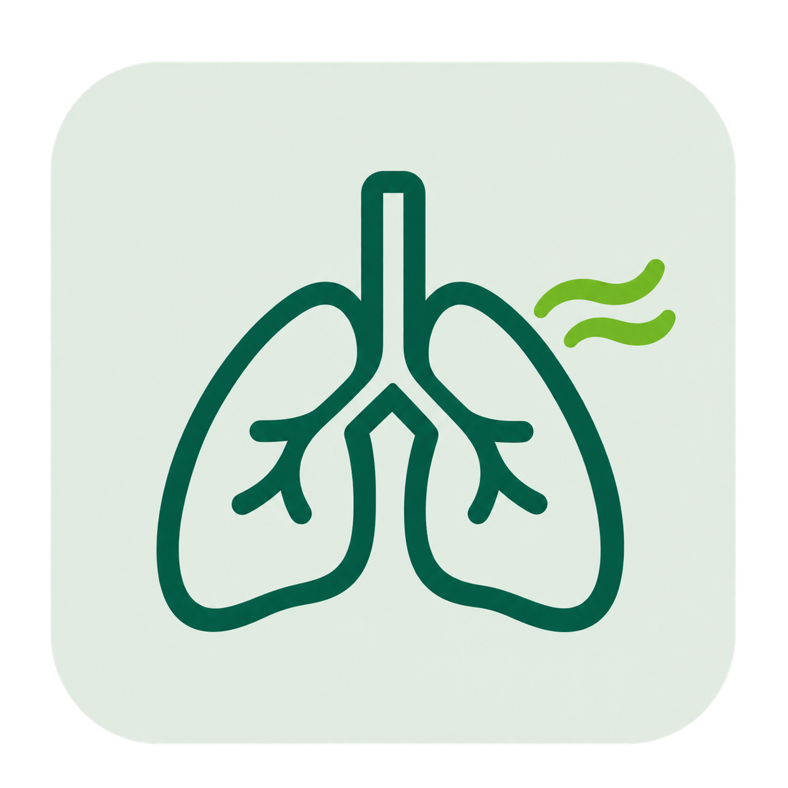
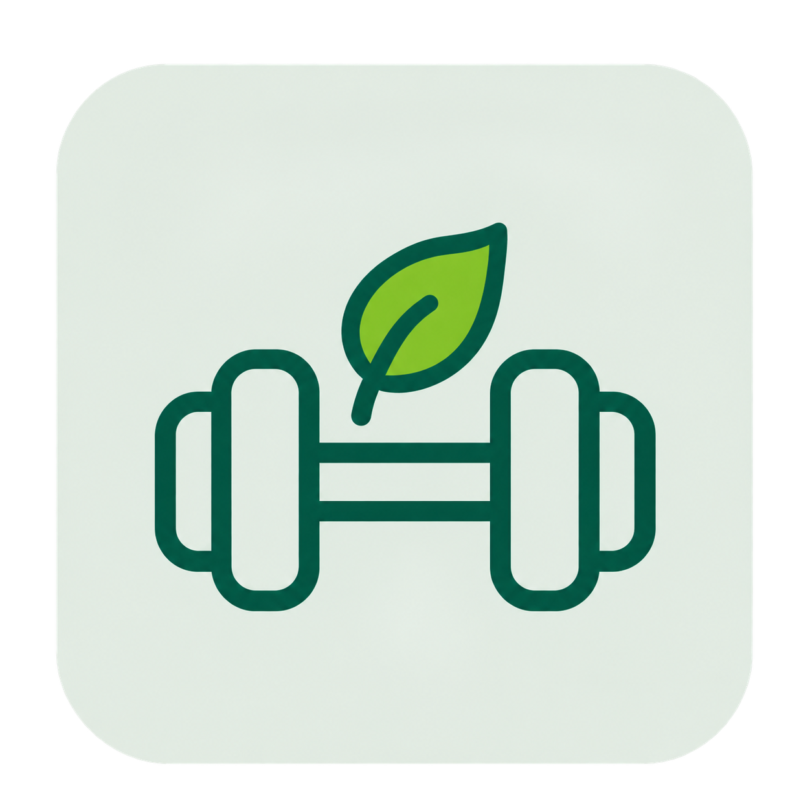
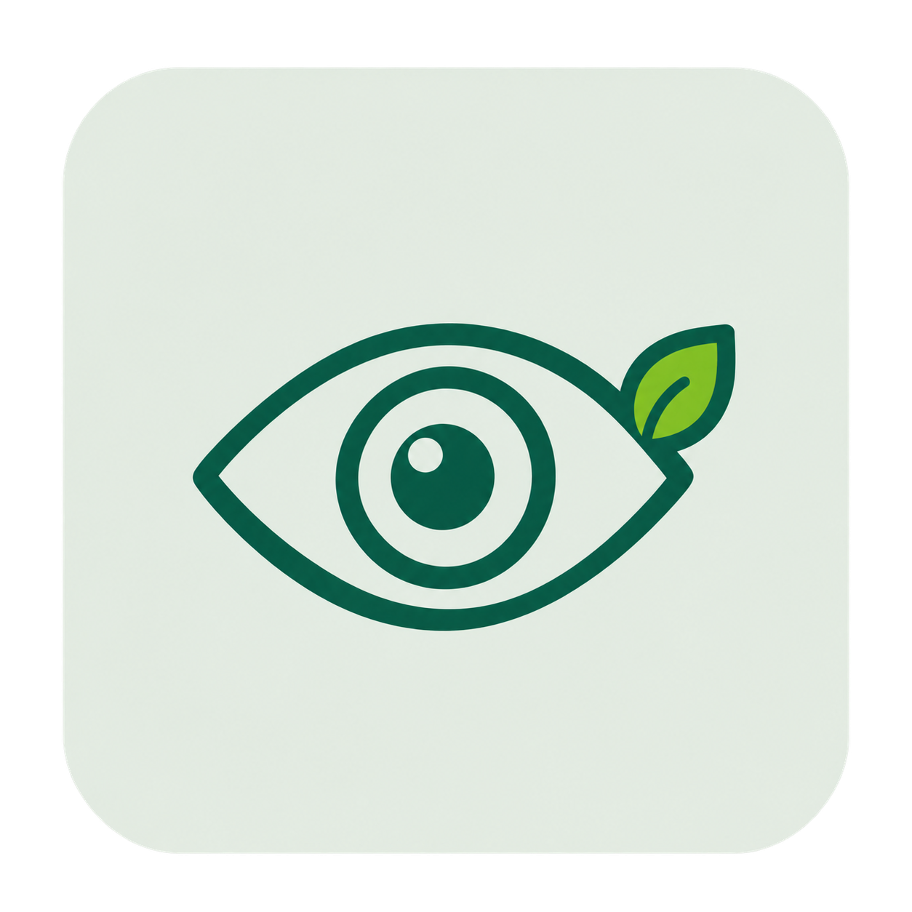

Ikon Kategori Walatra Herbal
Pratinjau gambar pada ukuran 144 px dan 48 px.

Pencernaan

Pernapasan
Pernapasan dan Tenggorokan
Daya Tahan Tubuh
Sendi dan Otot
Kesehatan Wanita

Nutrisi dan Kebugaran
Kesehatan Kulit

Kesehatan Mata
Vitalitas Pria
Kategori Tes Vibium Superadmin